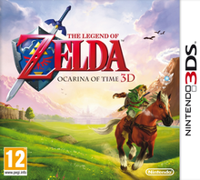

<!--
  Generated template for the Card page.

  See http://ionicframework.com/docs/components/#navigation for more info on
  Ionic pages and navigation.
-->
<ion-header>

  <ion-navbar>
    <button ion-button menuToggle>
      <ion-icon name="menu"></ion-icon>
    </button>
    <ion-title>Card</ion-title>
  </ion-navbar>

</ion-header>


<ion-content>

  <ion-card>
    
    <ion-card-content>
      <p>ola mundo</p>
    </ion-card-content>
  </ion-card>

</ion-content>
